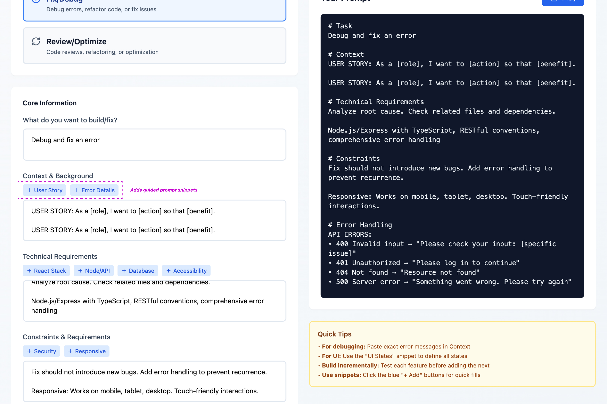

Guided Experience That Builds User Capability
The tool transforms complex prompt engineering into an intuitive, guided experience. By providing structured templates, progressive disclosure, and real-time quality scoring, it enables non-technical users to generate optimized prompts without needing to understand the underlying theory.
Scenario Templates
Pre-built starting points that match common use cases, eliminating the blank canvas problem.
Progressive Disclosure
Step-by-step guidance that reveals complexity only when users are ready for it.
Quality Scoring
Real-time calculator that evaluates prompt completeness and provides instant feedback.
Contextual Tips
Guidance that surfaces prompt engineering insights at the moment they're needed.
Key Features
1. Scenario-Based Templates
Pre-built starting points that match common use cases (landing pages, dashboards, APIs, etc.), eliminating the blank canvas problem and helping users begin with confidence. Users can select a template matching their intent rather than facing an intimidating empty text box.

2. Progressive Disclosure Flow
Step-by-step guidance that reveals information fields incrementally, preventing cognitive overload while ensuring all necessary prompt components are captured. The interface guides users through a familiar pattern: "What are you trying to build? Tell me more about it."
3. Prompt Quality Calculator
Real-time calculator that evaluates prompt completeness and optimization, providing instant feedback and encouraging users to strengthen weak areas before generating final output. The scoring creates positive reinforcement—users can see their score improve as they add more detail.

4. Contextual Quick Tips
Contextual guidance that surfaces prompt engineering insights at the moment they're needed, educating users without requiring them to study documentation. Tips appear contextually, explaining "why" without interrupting flow, gradually building user mental models.
5. Optimized Output Generation
Structured prompt formatting specifically designed for coding agent comprehension, translating user input into the technical detail and context that AI tools need to succeed. The output includes clear context, specific requirements, technical constraints, and desired outcomes.
Technical Implementation
Frontend
React with TypeScript for type-safe component development
Styling
Tailwind CSS for consistent, responsive design across devices
Build & Deploy
Vite for rapid development, Vercel for instant deployment
Design Impact: By focusing on UX principles rather than technical complexity, the design makes powerful AI tools accessible to a broader audience. The structured approach increases confidence when interacting with coding agents, removing the anxiety of "not knowing what to say."